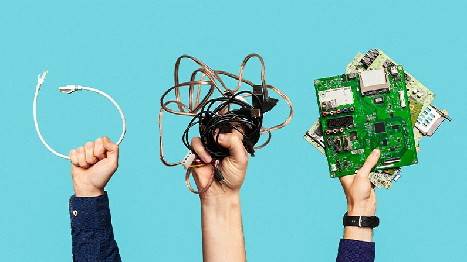

Existem diversos tipos de lixo eletrônico, por isso eles são separados em categorias, cada uma com especificações diferentes,
levando em conta o tamanho e para que são utilizados. Todos os eletrônicos presentes nessas categorias, possuem um processo de coleta,
transporte e reciclagem diferente e por conta disso devem ser manipulados de maneira correta e com muita atenção,
para que o descarte ocorra de forma correta com intuito de que o manuseio de seus resíduos tóxicos ocorra pelo método correto,
a fim de evitar a contaminação do meio ambiente e como consequência a saúde humana.

As categorias existentes são:
1. Grandes equipamentos como geladeiras, fogões, ar condicionado, TVs de grande porte, etc.
2. Pequenos equipamentos e eletroportáteis como ventiladores, aspiradores de pó, calculadoras, secadores de cabelo, rádios, etc.
3. Equipamentos de informática e telefonia como computadores, tablets, smartphones, impressoras, etc.
4. Pilhas e bateria portáteis como pilhas de modelo AA, AAA, recarregáveis, baterias portáteis, etc.
Os produtos listados acima possuem diferentes materiais, como plásticos, metais e outros, todos esses podem ser reciclados e utilizados para refazer novos produtos,
com isso a extração de recursos naturais do meio ambiente acabam sendo reduzido.